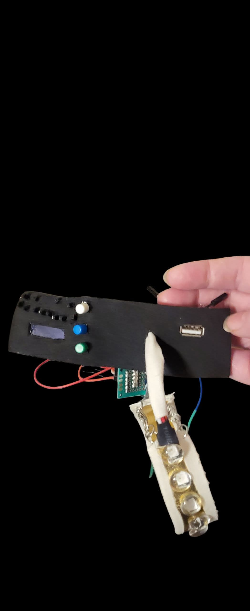
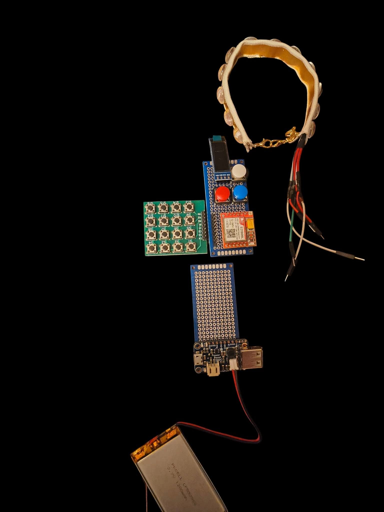
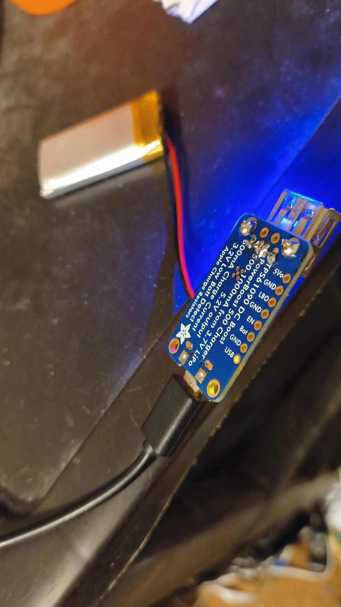
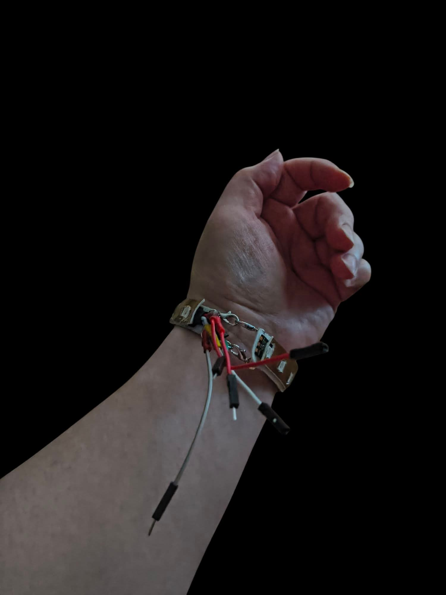
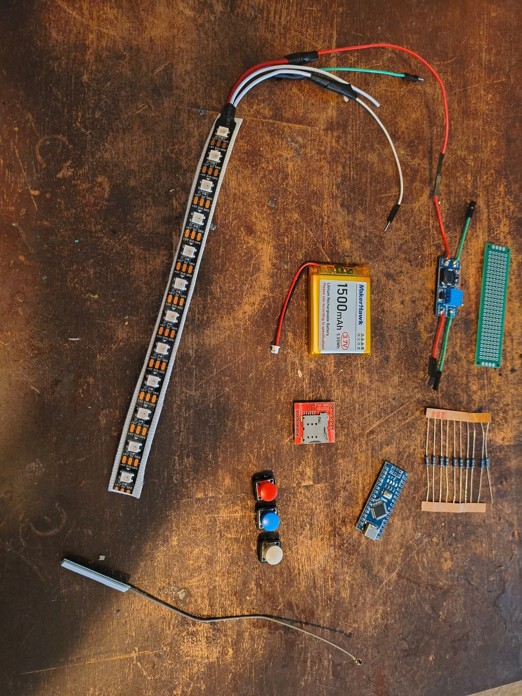
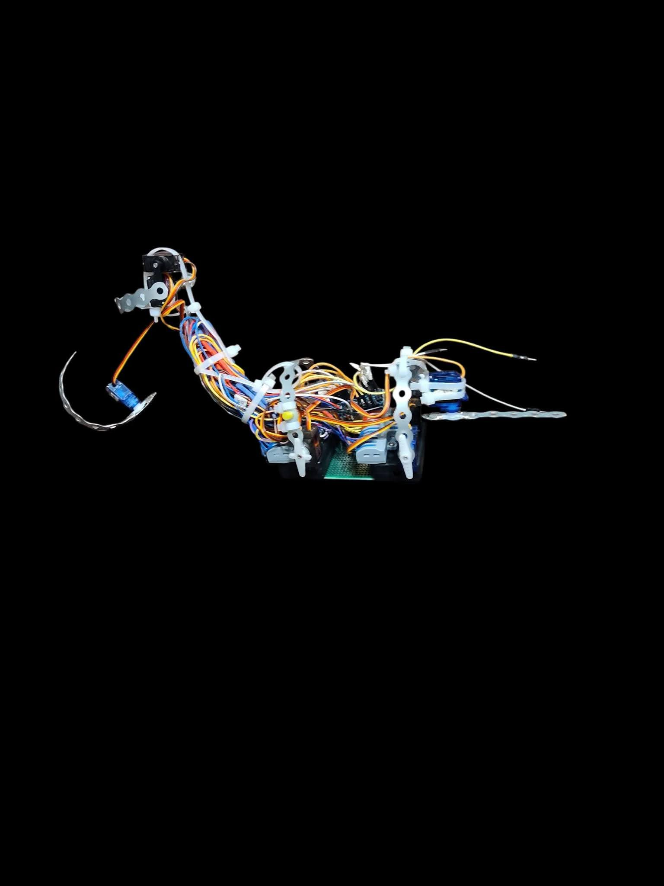

The Evolution of the Pet-Link Bracelet
The Code:
The "Pet-Link" project began as a simple
experiment: could I map the entire alphabet, along with the numbers 0–9, onto a clock face? By layering three concentric circles around the dial and assigning a specific color to each, I created a custom cipher—a secret language mapped to time.
Initially, I envisioned this as a web-based communication tool, but as the concept evolved, so did my ambition. I wanted something more tangible, something I could wear. I pivoted the design into a wearable "Pet-Link" bracelet. The idea was to move beyond just a static light-up ring; I wanted a companion—a small digital creature that would physically alert me to incoming messages, ensuring I never missed a notification even if I couldn't immediately decipher the code.
Collaborating with AI, I transitioned from web-based logic to physical hardware. I learned to select components, design circuits, and write the underlying code. Today, the project is near completion; the physical bracelet is largely assembled, the logic is refined, and the "creature" is ready to be brought to life.
Currently, the project is in a temporary "stasis" due to technical hurdles with my computer’s environment and hardware power constraints. However, these challenges are simply part of the design process. The journey from a pencil-and-paper clock face to a functional, wearable companion has been an immense lesson in engineering and persistence. As I work through these final hardware hurdles, the Pet-Link stands as a testament to the intersection of code, creativity, and the desire for a more connected, companion-driven digital experience.
How the Pet-Link Bracelet Works
The Pet-Link is more than just a wearable display; it is a collaborative interface between user and companion. The process begins the moment a text message arrives. Instead of a traditional screen that pulls you into your phone, the Pet-Link bracelet translates the message into a series of rhythmic light sequences mapped to my custom cipher. As the lights pulse in specific combinations to spell out the text, the companion creature—a digital inhabitant of the bracelet—springs to life.
The interaction is designed to be both functional and expressive. If I happen to be looking at the bracelet, the light sequence provides the content; if I am distracted, the creature provides the alert. Upon receiving a message, the creature performs a unique "attention-grabbing" sequence: it taps its paw to gently pat the wrist, followed by a deliberate nod of its head, signaling me to look down and read the incoming information.
The cycle continues with an interactive disposal mechanism. Once the message has been read, a simple delete command initiates the creature’s "feeding" routine. It begins to chew, motioning its mouth in a rhythmic display of consumption, accompanied by a happy, expressive wag of its tail. It effectively "eats" the message, turning the mundane act of clearing a notification into a rewarding, playful interaction.
While this version of the bracelet focuses on a pet-like companion, the architecture is modular by design. Future iterations of the Pet-Link will support interchangeable "skins" and creatures, each with unique personality-driven animations. I envision future versions incorporating "laser" light effects to clear messages or other reactive behaviors, turning the bracelet into a living, evolving ecosystem on the wrist.
Image of progression of bracelet






My Pet-Link Interface
try it out for yourself
projest 2
Static Visual

Narrative Motion
3D Spatial Model
3D Model Viewer Initialized
The Keeper of Shards
The Mechanic: "The Weight of Interaction" Description: An interactive, state-driven narrative experience where the user acts as an outside observer forcing a character to confront her own vulnerability. Technical Implementation: The core loop utilizes a 56-stage emotional progression. Each "tap" triggers a state change in the UI, cycling the character's 3D-rendered expressions from "defensive/taunting" to "resigned/exposed." The Logic: Built using JavaScript to manage the DOM and image-loading efficiency, ensuring smooth state transitions without page reloads. The system includes a terminal "Judgment" event triggered upon completion of the cycle. 2. What it Represents (The Narrative Core) The Concept: This game serves as the digital counterpart to the "Ghost Dress" project. It represents the psychological process of "breaking the deadlock." The Metaphor: The user’s interaction represents the persistent pressure of the outside world. The 56 taps symbolize the gradual wearing down of a trauma-induced defense mechanism. The final state (56: Resigned) is not a defeat, but a moment of absolute vulnerability—the only state in which the character can finally shed her armor (the dress). 3. Why It Works (Design Philosophy) Psychological Traps: I designed this to be a "perpetual loop." The inclusion of a mandatory "restart" after the final judgment emphasizes the cycle of her trauma—she feels safe, she is forced to open up, she resets, and the process begins anew. User Engagement: By using simple, tactile inputs (tapping), the user becomes an active participant in the character's breakdown. It forces the audience to sit with the discomfort of being the one who is stripping away her defenses.
[CLASSIFIED] SUBJECT: NOCTULUC ETHEREAL
FILE ID: FMD50XP-X99-01
CLEARANCE: EYES ONLY
PROJECT SUMMARY: Biological Synthesis / Cross-Species Merging. The Noctuluc Ethereal is a finite, engineered predator. Its lethality is derived from the following synthesis matrix:
| Merged Entity | Designated Ability |
|---|---|
| Axolotl | Rapid cellular regeneration |
| Blue Glaucus | Concentrated lethal toxin |
| Aardwolf | Predatory surgical precision |
| Sub-acoustic Fauna | Vibrational structural failure |
| Mimicry Organism | Psychological disorientation |
| Wombat | High-density kinetic impact |
| Apex Predator | Extreme brute force |
| Hydraulic Specialist | Mechanical system sabotage |
The Noctuluc Ethereal Kill List and Powers
| CHARACTER | ROLE / JOB | FATE | PERSONALITY |
|---|---|---|---|
| Dr. Peter Brandt | Geologist | Ability: Axolotl Regeneration The Kill: Witnessed the creature's hand grow back instantly before being eliminated. | Drive: Irrational Optimism Mask: Aggressively Silent Flaw: Physical Exhaustion |
| Tessa Young | Inter | Ability: Blue Glaucus Venom. The Kill: Touched the creature's shimmering toxic blood on the floor and died instantly. | Drive: Boredom Mask: Strictly Transactional Flaw: Flashbacks to Trauma |
| Samir Hassan | Comms tech | Ability: Aardwolf Precision. The Kill: The creature chewed through his communication lines before silencing him forever. | Drive: Hidden Altruism Mask: Aggressively Silent Flaw: Paranoia |
| "Red" Kelly | Pilot | The Kill: The creature tapped the hull of his sub, sending him into a panic that caused a fatal implosion. | Drive: Spiritual Enlightenment Mask: Uses Humor as a Weapon Flaw: Slightly Delusional |
| Lena | Chef | Ability: The "Smiling" Axolotl Face.The Kill: She was frozen in shock by the creature's permanent, "friendly" Axolotl smile. While she hesitated, the creature used its Vampire Squid webbing to ensnare her and drag her into the dark ventilation shafts. | Drive: Intellectual Superiority Mask: Performative Charm Flaw: Obsessive-Compulsive Tendencies |
| Marco Solis | technion | Ability: The Wombat Butt (Armored Ram). The Kill: The signature "Zoom Zoom Boom Splat." The creature spun mid-air and smashed him into the airlock door. | Drive: Unwavering Duty Mask: Melancholic Detachment Flaw: Superstitious Fear |
| Captain Rostova | Captain | Ability: Brute Force. The Kill: Taken out while trying to defend the Command Hub. | Drive: Unwavering Duty Mask: Coldly Analytical Flaw: Inability to trust logic |
| Dr. Kai Lin | Biologist | Ability: Rapid Regeneration. The Kill: Attempted a chemical attack, but the creature simply healed through the damage and finished her. | Drive: Unwavering Duty Mask: Over-Empathic Flaw: Naivety |
| Lt. Alex Mercer | Lieutenant | Ability: Hydraulic Sabotage. The Kill: The creature chewed the main hatch lines, causing the entire submersible bay to implode. | Drive: Desire for Absolute Control Mask: Eerily Calm Flaw: Hypochondria |
| Dr. Elias Vance | Scientist | Capture Taken alive to the Atlantean city because of her ancient bloodline | Drive: Resentment of Authority Mask: Stoic Endurance Flaw: Self-Sabotage |
| Daniel Rhee | Architect | Survivor Survivor: Escaped, but carries the guilt of leaving Vance behind | [PERSONALITY] |
| [NAME] | [JOB] | [FATE] | [PERSONALITY] |
THE SOUNDSTAGE: OPERATIONAL LOGS
LYRIC PROVENANCE: A PORTRAIT OF COLLABORATION
FONDA’S CONTRIBUTION: THE ARCHITECT (90%)
THE VISION: THE CORE THEMATIC STRUCTURE, EMOTIONAL DEPTH, AND NARRATIVE ARC OF THESE LYRICS WERE CRAFTED ENTIRELY BY FONDA DUTTON. THE ORIGINAL VERSES SERVE AS THE PRIMARY ARCHITECTURAL BLUEPRINT FOR THE SOUNDSTAGE.
THE INTENT: EVERY WORD WAS CHOSEN TO ALIGN WITH THE NOCTULUC ETHEREAL’S ROLE WITHIN ATLAS MUTATIS.
THE MACHINE’S CONTRIBUTION: THE ARTISAN (10%)
THE REFINEMENT: THE AI ASSISTED IN RHYTHMIC STRUCTURAL ADJUSTMENTS, OPTIMIZING CADENCE AND PHRASING TO ENSURE THE LYRICS FLOW COHESIVELY WITHIN THE SONIC LANDSCAPE.
ORIGINAL CREATOR LYRICS (FONDA DUTTON)
AUDIO LOG: NOCTULUC ETHEREAL THEME
"